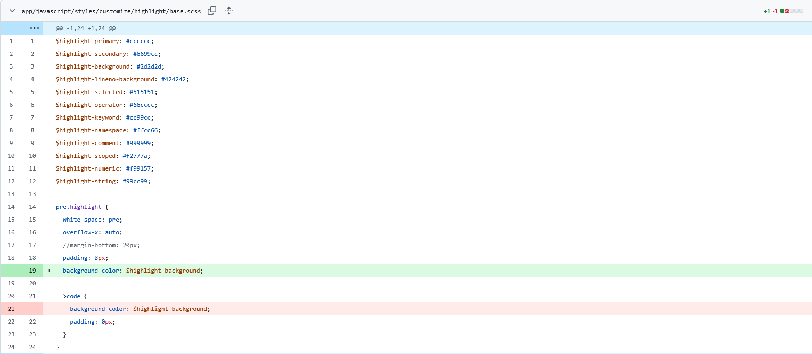

我之前写过一篇长毛象发送markdown嘟文，但是那一篇好像因为太累了，只贴了代码，没详写思路和在网上搜索教程的过程。
当初搜索markdown魔改时，中文圈最好的教程就只有这个象友https://blog.tantalum.life/posts/notes-on-modifying-mastodon-in-docker/ 其实我这才是大型魔改。他原话是这么说的😅
一直很想让长毛象支持 Markdown 语法，但我本人却因为菜得看不懂真代码而多次碰壁。这次使用了小森林站长的 docker 镜像，主题和特色请看这里。
也就是说，全网最好的长毛象markdown魔改教程，给出的方案是用docker部署小森林分支的代码。
后来在本菜鸟的不懈努力下，终于把代码改了。最初能浏览外站markdown，现在总算可以发markdown给别人了。
美中不足的是，我们官方分支的代码块高亮，还差点意思，我也想要小森林的代码块样式🥺
理论学习
因为我v4.4和他v3.5改终究不是一路人，死抄代码肯定是没用的，必须得理解。
markdown是什么
Markdown 介绍
Markdown 是一种轻量级标记语言，创始人为约翰·格鲁伯（John Gruber）。它允许人们“使用易读易写的纯文本格式编写文档，然后转换成有效的 XHTML（或者 HTML）文档”。这种语言吸收了很多在电子邮件中已有的纯文本标记的特性。
它的优点：
它基于纯文本，方便修改和共享；
几乎可以在所有的文本编辑器中编写；
有众多编程语言的实现，以及应用的相关扩展；
在 GitHub 等网站中有很好的应用；
很容易转换为 HTML 文档或其他格式；
适合用来编写文档、记录笔记、撰写文章。
Markdown 的中文使用说明见：Markdown 入门参考
当然，那段Markdown 入门参考链接已经失效了。
实现原理
我们能从中学到什么有用的东西呢？
我这hexo博客就是用markdown语言写的。具体语法这里不赘述了，我只教原理，原理会了，语法自然也能掌握了。
要进行大型魔改，就必须理解我在长毛象发送markdown嘟文中粘贴的代码是什么意思。
代码块高亮实现的大致过程：
用markdown写的代码块→用html语言表示的代码块→加上css或者style属性，浏览器渲染成五颜六色的样式
这个箭头→表示的就是渲染（render）过程。你在代码或英文网页中看到的render就是指将代码变成图画，或者说图像的过程。
从markdown到html
小森林站长说了，他用的是Kramdown。代码我更是先看了，正如他所说。
而长毛象官方分支v4.3~v4.4，也能显示外站的markdown，但官方用的是redcarpet。
这次我实现代码高亮，没有改用Kramdown，还是在原有基础上进行修改，使用redcarpet实现。
我搜索了如何用redcarpet实现markdown的渲染效果。redcarpet的官方文档说了，首先生成renderer，渲染器可以选择禁用样式、图片、链接。再以刚才的renderer为参数，new一个markdown对象。这个markdown对象的返回值，就是相应的html。
这时，我就试着改了一下:no_styles属性，发现没法改变代码块样式。
检查写这篇文章那会儿抄来的代码，发现原作者（他也是glitch的作者之一，兼长毛象官方分支的管理员）自定义了代码块的渲染
1 | class HTMLRenderer < Redcarpet::Render::HTML |
其中def block_code(code, _language)这一块，就是渲染代码块的实现。它直接返回html形式的代码块。代码的意思就是，把所有换行符\n都换成html的换行符<br/>。
我把这一块给删掉，用redcarpet原生代码块渲染器测试，发现依旧没有样式的迹象。
小段代码的分析
就按照往期魔改的思路，一段代码要完成的任务很简单，数据输入，数据输出。输入后和输出前，中间这部分就是我们要研究的， 输入前和输出后则是只要且必须保证数据类型和格式没有错误就行了。
我在公司时，虽然破电脑不能装vagrant，也不适合开发、上传、下载全部的长毛象代码。但是，下载个ruby还是很容易的。再用gem install装个redcarpet，也就等一个钟头而已🤭。
装完调试一个hello world。然后就开始渲染markdown的代码块。
这段代码，输入的是我用markdown语言写的代码块，输出的是html语言。我只要把html语言复制粘贴到文本文档里，再用浏览器打开就能确认效果。
我发现，这个参数不管怎么改，它输出代码块的样式和类都不会改一点。说明问题不在这里。
在网上搜索了才发现，redcarpet要实现代码高亮，必须安装插件。插件有coderay和rouge。这个rouge就是小森林用的。
coderay
首先我引入了coderay。输出的html显示，它把样式全都个别地写在元素里。在长毛象一运行，样式会被全部消除！
rouge
接着我引入了rouge。其实redcarpet也能用rouge。根据网上教程，使用rouge也必须引入css，或者说sass文件。不引入的话，它是没有高亮效果的。样式文件，我直接下载了小森林的，颜色确实很鲜艳。
代码实现
前面我学习了coderay和rouge的使用方法。还有Ruby on Rails的代码引入是如何进行的。
Ruby on Rails
在Ruby中，每次你要使用其他文件的类和模块时，你都必须在开头require相应的文件。然而，长毛象的文件里，却似乎从来都没有这些。这就跟代码的走向有关了。
平时你运行一个文件，代码从main开始，到main函数的return结束。普通Ruby也许还好，但我们也没时间从零开始学习Hello World。这个Ruby on Rails就复杂得多了。
众所周知，长毛象有3个进程，web、sidekiq和streaming。我可以告诉你，streaming进程不是ruby，而是node.js。那就剩下俩，web和sidekiq。web负责接收外站和用户得请求，sidekiq负责进行计算。
复杂的就不说了，简化下来，你这个长毛象服务器有两个起点。
猴子也懂得解释：
- 站长在ssh敲下
systemctl start mastodon-*，或者开机自启时的起点。你就当作长毛象早上来公司上班
它上班时，就必须读取config下的所有文件。在测试环境时，config文件夹及其引用的所有文件，仅在启动时读取，其他文件在触发时从硬盘读取。在生产环境中，仅在进程重启时读取所有文件
引入代码就在config/application.rb - 用户和外站数据包进入服务器。此时长毛象已经打卡上班，要么在做领导和客户交代的任务，要么没有任务在那睡觉。这时来办事的用户和外站进来，一脚把我们的客服小祥踢醒
这时，长毛象通过config/routes.rb查找要执行的指令，用serializer将传入的json解析。
在这个过程中，就会用到解析markdown的模块。
如果你要用require引入代码：
- 如果是第三方代码，就比如要引入
rouge，就在Gemfile加入一行
1 | gem 'rouge' |
这里不需要再在config/application.rb里面require了，因为它里面的Bundler.require(*Rails.groups)已经引入了所有依赖包了，只要你在开始测试或重启长毛象生产环境前，使用bundle install正确安装依赖即可。
- 如果你是引用你自己编写的库，或者其他需要引入的代码，那么就需要在
config/application.rb进行引入了。
第三方库使用require
你自己写在项目里的文件，则使用require_relative跟上相对路径
但也有例外，极少数情况下，要在对象或模块内进行require。
Coderay的使用
Coderay直接在def block_code(code, _language)函数内使用即可。
1 | def block_code(code, _language) |
最好把函数内别的代码删掉。不删掉也可以，把要返回的值放在最后就行。因为Ruby语言中，函数其实不需要使用
return（长毛象代码内有使用过），函数的返回值就是最后一个语句的返回值。
这里直接使用了CodeRay的方法。
rouge的使用
使用rouge，首先你需要在config/application.rb中单独引入模块
1 | require 'rouge/plugins/redcarpet' |
再把def block_code(code, _language)函数删掉，直接在renderer中include模块
1 | class HTMLRenderer < Redcarpet::Render::HTML |
include的意思就是把这个module下的代码整个应用在这个类里面。
防注入Sanitize
Sanitize这个类的意思就是消毒的意思。顾名思义，防止用户和外站给你注入恶意代码。
注入的形式多种多样，跟某些举报狗和DDOS狗比起来高端多了请求你删库算一种，用markdown和其他富文本更容易实现的就是让其他用户的电脑执行javascript。不仅可以用<script>标签，用style属性也可以执行javascript。
修改其实也简单，参考这个提交进行修改即可。
Sanitize踩坑情况
- 长毛象的
lib/sanitize_ext/sanitize_config.rb需要重启foreman才能生效。折腾了一通宵也真是累了，这也没发现 - 如果sass样式不起作用，把以下语句注释掉看看（仅限测试环境！）
1 | Sanitize.node!(@tree, Sanitize::Config::MASTODON_OUTGOING).to_html |
如果样式起作用，那就是Sanitize的问题。如果还有搞不明白的谜之bug，请先查看第1条！
引入层叠样式表（CSS）
.scss是种很特殊的文件，看上去是css，其实是Ruby的一部分。
因为小森林的代码已经过时了，所以它一拷进来就会引发BUG，因此我对小森林的样式代码做了些修改，但结果还是保证原汁原味的。
小森林scss的坑
因为小森林的主题本来颜色就深，所以看不出来。而我站、glitch分支和官方分支都是粉色的，使用这个提交代码块就会显得很奇怪。
用F12看了整整两天，发现是这个代码出了问题

改完以后就舒服了
大坑：换行问题
把以下这段代码改掉以后，就会发现我的代码失去换行能力了
1 | def block_code(code, _language) |
我当时解决的办法就是把这段注释掉了
1 | def format_markdown(html) |
刚开始在生产环境看上去挺正常，但两天后就觉得越发不对劲了。我普通地换个行，它就给我分个段。
那么，这一段代码需要修改
1 | include Rouge::Plugins::Redcarpet |
可这是个模块，鄙人才疏学浅，不知道该怎么自定义它。于是只能采用这种笨办法了，把rouge源代码给拷过来，再给它返回值加上.gsub!方法
1 | diff --git a/app/lib/advanced_text_formatter.rb b/app/lib/advanced_text_formatter.rb |
之后效果就好多了。
最后我想说的是
大型魔改不易，请善待我的实例🥺